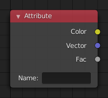

属性节点¶

属性节点。¶
属性 节点可获得物体或网格的属性信息。
输入项¶
该节点没有输入项。
属性¶
- 名称
属性的名称，通过在此处的文字框中写入属性的英文名来获得对应的输出。大多数属性值都能通过其它各种输入节点来更简便地得到，除了以下属性：
- Vertex Color Layers(顶点颜色层)
可以通过他们的名字来检索。
- Density(密度)
当该材质被用于一个域物体（物理模拟中被设置为流体域的物体）时，输出 流体域 内烟雾密度（浓度）的标量值。
- Color(颜色)
当该材质被用于一个域物体时，输出 流体域 内烟雾的颜色。此时，颜色输出和矢量输出是相同的。而系数输出的则是各通道的平均值。
- Temperature(温度)
输出体积内的温度值（标量）。输出的标量值介于0-1之间，对应0-1000K。该输出可通过黑体转换器节点或原理化体积着色器来渲染出基于物理的火焰。在该属性下，三个输出项的值都是相同的。
- Flame(火焰)
输出 流体域 内火焰密度（浓度）的标量值。在该属性下，三个输出项的值都是相同的。
- Ocean Foam(海洋泡沫)
Gives a scalar defining where foam might appear when using an Ocean Modifier. This depends on the name you give this property.
See also
想了解完整的属性名称列表，请查阅 此页面。
输出¶
- Color(颜色)
指定属性的RGB颜色输出。
- 矢量
指定属性的XYZ矢量输出。
- 系数
指定属性的标量输出。